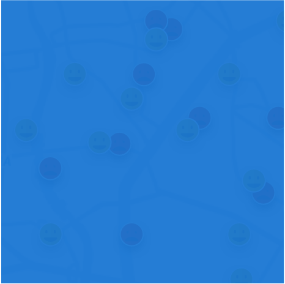

<article class="col-xs-12 col-sm-6 col-md-3 news-card" ng-repeat="noticia in news">
  <time datetime="{{ noticia.date }}" class="news-date">
    {{ noticia.created_at | amUtc | amDateFormat:'DD'  }} <span>/ {{ noticia.created_at | amUtc | amDateFormat:'MMMM'  }}</span>
  </time>

  <a href="http://www.twitter.com/minsaude" ng-href="{{ noticia.entities.urls[0].url }}" class="news-link" target="_blank" title="Clique para ver esta notícia.">
    <figure>
    
      <figcaption>{{ noticia.text }}</figcaption>
    </figure>

    <footer class="news-footer">
      <span class="news-address">{{ noticia.entities.urls[0].url }}</span>
      <span class="news-read-more">Ler mais</span>
    </footer>
  </a>
</article>
